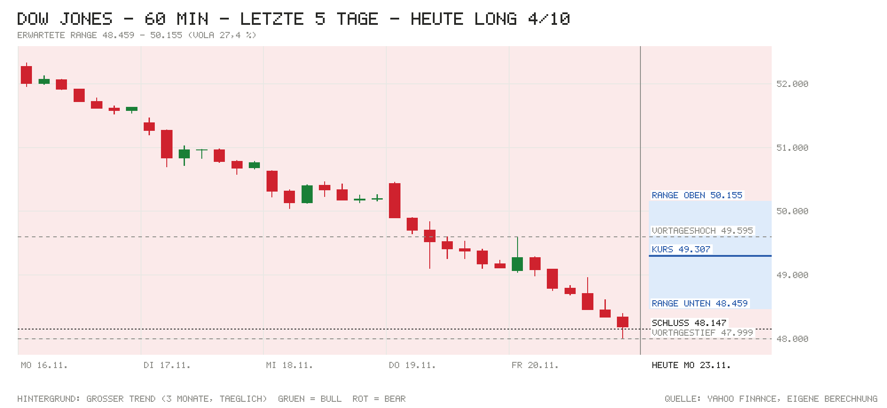

Tagesentscheidung ab 15:32 bis 22:00 Uhr
Nvidia setzt Jensen Huang wieder als CEO ein, die Aktie springt rund 29 %, und der Dow eröffnet 2,27 % höher. Der Anstieg ist breit: Alle 30 Werte bringen zusammen +1.071 Punkte, Goldman Sachs, Nvidia und Caterpillar je über 200. Hebel-Fonds sind im S&P-Future deutlich short, Eindeckungen können weiter tragen. Gegenargumente: Der große Trend steht auf Bear, die Renditen steigen (10J 4,97 %) und die Fed-Erhöhung im Dezember ist voll eingepreist. Nach so einer Lücke ist auch ein Rücksetzer möglich. Darum nur leicht Long (eigene Einschätzung).
- Kurs um 15:32
- 49.307
- Erwartete Range
- 48.459 – 50.155
- Eingepreist (Tagesoption)
- ±1,73 %
Einschätzung vom Kurs um 15:32 bis zum US-Schluss. Range = ±1 σ für die restliche Handelszeit aus der S&P-500-Tagesoption, auf den Dow umgerechnet (ca. 68 %). Keine Anlageberatung.
Chart

Signale
| Signal | Wirkung | Stand und Einordnung |
|---|---|---|
| Eröffnung & erste Minuten | Rückenwind | Eröffnung 49.240 (Lücke +2,27 %), jetzt 49.307 (+0,14 % seit Eröffnung), Hoch/Tief bisher 49.510/49.240. Die Lücke hält bisher. |
| Schwergewichte heute | Rückenwind | Alle 30 Werte +1.071 Pkt. Goldman Sachs +232, Nvidia +223, Caterpillar +210, Microsoft +129; einziger großer Bremser UnitedHealth −107. |
| US-Daten heute | Neutral | Chicago-Fed-Index (14:30) Ist −0,06 vs. Prognose 0,20, schwächer, aber kaum marktbewegend. S&P-Einkaufsmanager um 15:45. |
| Europa & Asien | Rückenwind | DAX +1,63 %, Euro Stoxx 50 +1,88 %, deutscher Einkaufsmanagerindex 55,0 vs. Prognose 53,3. Asien gemischt: Shanghai +0,15 %, Hang Seng −0,12 % (Nikkei heute n/v, Freitag −5,06 %). |
| Zinserwartung | Gegenwind | Fed am 9.12.: 101 % für +25 Bp. (impl. 4,13 %), Januar weitere 67 %. Die Fed bleibt auf Straffungskurs. |
| Renditen | Gegenwind | US 2J 4,72 % (+9 Bp. vs. 4,63 % offiziell 20.11.), 10J 4,97 % (+6 Bp. vs. 4,91 %). Die Flucht in Anleihen dreht wieder. |
| Kreditstress | Neutral | FRED n/v. Ersatz: HYG +0,32 %, LQD −0,04 %. Hochzins erholt, kein Stress. |
| Öl & Dollar | Rückenwind | WTI 81,96 USD (−2,41 %), Brent 88,10 USD (−4,83 %), EUR/USD 1,0942 (−0,25 %). Billigeres Öl entlastet, der feste Dollar dämpft leicht. |
| Trend | Gegenwind | 49.307 klar unter dem 21-Tage- (51.669), 50-Tage- (51.706) und 200-Tage-Schnitt (50.776). Der große Trend steht seit 28.10. auf Bear und passt nicht zu Long. |
| Positionierung | Rückenwind | COT 17.11.: Hebel-Fonds im S&P-Future netto −234.978 (Short-Abbau um 68.082). Verbliebene Shorts sind Treibstoff für Eindeckungen. |
| Unternehmensnachrichten | Rückenwind | Nvidia holt Huang als CEO zurück, Chipwerte springen; UnitedHealth fällt wegen einer geplanten Medicare-Advantage-Reform. |
| Profi-Sicht | Neutral | ING: „Uneasy calm“, Stabilisierung, aber heiße US-Inflationsdaten diese Woche sind der Test. |
| Termine im Fenster | Neutral | US-Einkaufsmanager 15:45, 3-Monats-T-Bill-Auktion 17:30, Rede New-York-Fed-Chef Williams 22:00 (zum Schluss). Kein Zinsentscheid. |
Dow-Werte heute
| Aktie | Heute | Beitrag |
|---|---|---|
| Goldman Sachs | +4,81 % | +232 Pkt. |
| Nvidia | +29,13 % | +223 Pkt. |
| Caterpillar | +6,74 % | +210 Pkt. |
| Microsoft | +4,34 % | +129 Pkt. |
| UnitedHealth | −5,16 % | −107 Pkt. |
| Amazon | +4,06 % | +61 Pkt. |
| Amgen | +2,15 % | +57 Pkt. |
| Honeywell | +3,47 % | +45 Pkt. |
| Summe aller 30 Werte | +1.071 Pkt. |
Beitrag = Kursänderung seit gestern ÷ Dow-Divisor (aus den Kursen berechnet, 0,16373). Laufende Kurse von Yahoo, bis zu 15 Minuten verzögert. Die Dow-Liste im Skript hat den Stand Nov. 2024.
Großer Trend (3-Monats-Momentum)
- Stand
- Bear
- Seit
- 28.10. (5 Wechsel in 3 Monaten)
- Schluss 20.11.
- −9,87 % vs. Zins +1,00 %
- Heute dreht es bei Schluss über
- 54.112 (jetzt −8,88 %)
Auch mit dem Kurs von jetzt bliebe das Signal Bear, die Erholung von heute ändert daran nichts. Bull = Rendite der letzten 3 Monate über dem Geldmarktzins, Bear = darunter. Regel: Rendite der letzten 63 Handelstage (≈ 3 Monate) gegen die 13-Wochen-T-Bill (^IRX, jetzt 4,15 %), jeden Tag zum Schluss neu entschieden, Zeitrahmen Tageskerzen (nach Antonacci 2014, dort monatlich über 12 Monate; täglich entschieden dreht es öfter falsch). Keine Anlageberatung.
Bilanz der letzten Entscheidung
20.11.: Short mit 3/10 ab 49.172. Die Richtung war richtig: Schluss 48.147, +1.025 Punkte in Richtung der Einschätzung (Hoch 49.595, Tief 47.999). Die Range von ±628 wurde verfehlt. Gesamt seit Start: 12 Einschätzungen, Richtung 58 % richtig, Summe −10 Punkte bis Schluss (Schnitt −1). Range bisher an 42 % der 12 Tage getroffen (Soll ca. 68 %).
Marktlage
| Markt | Stand | Veränderung |
|---|---|---|
| Dow Jones (Schluss 20.11.) | 48.147,33 | −1,93 % |
| Dow (Eröffnung heute) | 49.239,91 | +2,27 % |
| Dow (jetzt, Kurs zur Notiz 15:32) | 49.307 | +2,41 % |
| S&P 500 | 7.238,45 | +4,75 % |
| Nasdaq 100 | 26.806,69 | +7,10 % |
| US-Futures (S&P / Nasdaq) | 7.252,25 / 26.878,50 | +4,57 % / +6,97 % |
| DAX (aktuell) | 25.207,92 | +1,63 % |
| Euro Stoxx 50 (aktuell) | 6.053,38 | +1,88 % |
| EUR/USD | 1,0942 | −0,25 % |
| WTI (USD/Barrel) | 81,96 | −2,41 % |
| Brent (USD/Barrel) | 88,10 | −4,83 % |
| Gold (USD/Unze) | 3.678,50 | +4,64 % |
| VIX | 26,94 | −24,94 % |
| VXD (Schluss 20.11.) | 27,62 | +15,52 % |
Stände von 15:33 Uhr (Yahoo, bis 15 Min. verzögert); S&P 500 und Nasdaq 100 laufend seit Eröffnung. Dow-Schlussveränderung 20.11. aus 49.097 (19.11.) und 48.147 berechnet. Die Vorwoche war laut Yahoo die schlechteste Woche des Dow seit 2020, alle drei großen Indizes lagen in der Korrektur. Fallendes Öl und fallende Volatilität sind grün markiert.
Anleihen & Zinsen
| Kennzahl | Stand | Veränderung |
|---|---|---|
| US-Treasury 2J (live) | 4,72 % | +9 Bp. (vs. 4,63 % offiziell 20.11.) |
| US-Treasury 10J (live) | 4,97 % | +6 Bp. (vs. 4,91 %) |
| Fed nächste Sitzung (9.12.) | 101 % für +25 Bp. (impl. 4,13 %) | Erhöhung voll eingepreist |
| Fed-Zielband | 3,75–4,00 % (EFFR 3,88 %) | zuletzt +25 Bp. am 17.9. |
| US-Hochzins (HYG, Ersatz) | 76,58 USD | +0,32 % heute |
| Investment Grade (LQD, Ersatz) | 103,65 USD | −0,04 % heute |
Die Risikoaufschläge von FRED lagen nicht vor, daher die Anleihe-ETFs HYG und LQD als Ersatz (nur Tagesveränderung, Wochenwert n/v). US-Live-Kurve Stand 15:32 Uhr. Offizielle 10J vor einer Woche: 5,15 %.
Termine heute (deutsche Zeit)
- 14:30 USA: Chicago-Fed-Aktivitätsindex – Ist −0,06 vs. Prognose 0,20 (zuvor 0,05)
- 15:30 Eröffnung der Wall Street; EZB-Chefvolkswirt Lane spricht
- 15:45 USA: S&P-Einkaufsmanager Industrie – Prognose 54,5 (zuvor 54,9) · Dienste – Prognose 55,6 (zuvor 56,1)
- 17:30 USA: Auktion 3-Monats-T-Bills – zuvor 4,155 %
- 22:00 US-Börsenschluss; Rede New-York-Fed-Präsident Williams. Keine Quartalszahlen von Dow-Werten im Kalender.
Nachrichten zu Dow-Werten
- Nvidia: Der Verwaltungsrat setzt Jensen Huang mit sofortiger Wirkung wieder als CEO ein (8-K); zuvor hatte Präsident Trump die Rückkehr öffentlich gefordert. Huang war vergangene Woche zurückgetreten, die Aktie hatte in der Woche 23 % verloren. Die interne Untersuchung läuft weiter. Einschätzung: klar positiv für die KI-Stimmung, aber die Kontrollfragen sind nicht vom Tisch.
- UnitedHealth: −5,16 % (−107 Pkt.). Ein Entwurf der Gesundheitsbehörde CMS vom 20.11. will die Medicare-Advantage-Bewertungen (Star Ratings) und deren Bonuszahlungen verschärfen; Humana, CVS und Elevance fallen mit. Einschätzung: negativ, belastet den Dow als einziges Schwergewicht spürbar.
- Goldman Sachs: +4,81 % (+232 Pkt.), größter Treiber. Eigene Meldung fand sich nicht. Einschätzung (ohne Quelle): Die Bank, die zuletzt am stärksten unter dem KI-Ausverkauf litt, erholt sich mit ihm.
- Caterpillar, Microsoft, Amazon, Cisco: zusammen rund +435 Pkt. Einschätzung (ohne Quelle): KI-Infrastruktur und Cloud folgen Nvidia nach oben.
Profi-Sicht & Positionierung
- ING THINK: Das FX Daily („Uneasy calm as markets stabilise“) sieht nur eine unruhige Beruhigung nach dem Tech-Ausverkauf; am meisten helfe eine weichere Fed, doch die US-Kerninflation (PCE) dürfte fest bleiben. Der Dollar bleibe deshalb gefragt.
- Positionierung (COT, Stand 17.11.): Hebel-Fonds im S&P-Future netto −234.978 Kontrakte (Short-Abbau um 68.082), Vermögensverwalter netto +895.049. In 10J-Treasuries bauen Hebel-Fonds ihre Short-Position auf −2,48 Mio. aus.
Quellen
- Marktdaten (Skript
marktdaten.mjs): Yahoo Finance (Kurse, Dow-Werte, VXD, ^IRX), Nasdaq (Kalender, Optionskette SPY), US-Live-Kurve, Bundesbank, U.S. Treasury, Fed-Pfad über Amber Terminal, CFTC, ING THINK - NVIDIA Form 8-K: Wiedereinsetzung von Jensen Huang (23.11.2026)
- Yahoo Finance: Nvidia stock soars after company reinstates Jensen Huang as CEO
- Investing.com: Why is NVIDIA stock surging today?
- CNBC: Stock market today – live updates
- Quartz: UnitedHealth, Humana, CVS stocks drop on Medicare Advantage proposal
- NPR/WUSF: Nvidia board says it does not intend to reinstate Jensen Huang (17.11.)
- ING THINK: FX Daily – Uneasy calm as markets stabilise